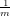

Making geological sense of ‘Big Data’
|
|
| (1) |
and a configuration1 X
|
| (2) |
so as to minimise the (‘raw’) stress S
|
| (3) |
The (x,y)-coordinates resulting from Equation 2 can be plotted as a map which, in the case of the Helm (1964)
dataset, reveals the well-known colour circle (Figure 2a). Exactly the same principle can be used for geological data
with, of course, dissimilarities not based on subjective perceptions but analytical data. There is a rich literature
documenting ways to quantify the dissimilarity between petrographic or geochemical datasets. Further details about
this are provided in Appendix A.
Applying these methods to the Namib dataset, we can convert the raw input data (Figure 1) into five
dissimilarity matrices. For the purpose of this exercise, we have used the Kolmogorov-Smirnov statistic for the U-Pb
data, the Bray-Curtis dissimilarity for the heavy mineral and bulk petrography data, and the Aitchison distance
for the major and trace element compositions (see Appendix A for a justification of these choices).
Each of the resulting dissimilarity matrices can then be fed into an MDS algorithm to produce five
configurations (Figure 2). Note that, because the Bray-Curtis dissimilarity does not fulfil the triangle
inequality, the petrographic and heavy mineral datasets cannot be analysed by means of classical MDS
(Vermeesch, 2013). The MDS maps of Figure 2 were therefore constructed using a nonmetric algorithm
(see Kruskal and Wish, 1978; Borg and Groenen, 2005; Vermeesch, 2013, for further details). It
is important to note that nonmetric MDS merely aims to reproduce the ‘rank order’ of the input
data, rather than the actual dissimilarities themselves (Kruskal, 1964; Borg and Groenen, 2005).
Bearing this in mind, the five MDS maps representing the Namib dataset reveal some clear trends in the
data.
A first observation is that the coastal samples (N1, N2, N11, N12, T8 and T13) plot close together in all five MDS maps, with the easternmost samples (N4, N5, N8 and N9) plotting elsewhere. Second, the Orange River samples (N13 and N14) tend to plot closer to the coastal samples than to the inland samples. And third, within the eastern group, the northern samples (N4 and N5) are generally found in a different direction from the southern samples (N8 and N9), relative to the coastal group. But in addition to these commonalities, there also exist notable differences between the five maps. Specific examples of this are the odd position of N14 in the bulk petrography configuration (Figure 2d), the different orientation of the major and trace element configurations (Figures 2e and 2f) and countless other minor differences in the absolute and relative inter-sample distances. Also note that not all five datasets fit their respective MDS configuration equally well. A ‘goodness of fit’ measure called ‘Stress-1’ can be obtained by normalising the ‘raw’ stress (Equation 3) to the sum of the squared fitted distances (Kruskal, 1964; Kruskal and Wish, 1978). The resulting Stress-1 values range from 0.02 to 0.07, indicating ‘excellent’ fits to some and ‘fair’ fits to other datasets (Figure 2b-f). The five MDS maps, then, present us with a multi-comparison problem similar to the one presented by Figure 1, with the only difference being that it does not involve multiple KDEs or pie charts, but multiple MDS maps. Making this multi-sample comparison more objective requires an additional layer of statistical simplification, in which all the data are pooled to produce a ‘consensus’ view.
According to Greek mythology, Procrustes was an inn keeper who managed to fit all travellers to a single bed, regardless of their size or length, by stretching or amputation. Similarly, in a statistical context, a Procrustes arrangement can be found that resembles each of several MDS maps by a combination of stretching, translation, reflection and rotation. In mathematical terms, Generalised Procrustes Analysis (GPA, Gower, 1975; Gower and Dijksterhuis, 2004; Borg and Groenen, 2005) proceeds in a similar manner to the method laid out for MDS in Section 3. Given K sets of two-dimensional MDS configurations Xk (for 1 ≤ k ≤ K)
|
| (4) |
GPA aims to find a transformation g constituting of a combination of scale factors sk, orthonormal transformation matrices Tk and translation matrices tk (Borg and Groenen, 2005):
|
| (5) |
and a ‘group configuration’
|
| (6) |
so as to minimise the least squares misfit SS:
|
| (7) |
Applying this method to the five (i.e., K=5) Namib MDS maps of Figure 2 produces a Procrustes map (Figure 3) confirming the salient points raised in Section 3. The GPA analysis shows the dichotomy between the coastal and eastern sands, as well as the similarity of the coastal sands with the Orange River, and it does so more clearly than any of the five original MDS maps (Figure 2). It also emphasises the significance of the differences between the northeastern and southeastern samples, which plot at right angles from each other relative to the coastal samples. The GPA map, then, paints a detailed picture of the sediment routing system in the Namib Sand Sea, which would have been difficult to obtain from a simple visual inspection of the raw data. However, GPA weighs all five MDS configurations equally and does not readily take into account the significant differences in ‘goodness of fit’ (‘Stress-1, Section 3) between them. Also, although the trends and groupings among samples are clear from the GPA map, the underlying reasons for these features are not. The next section introduces a method aiming to solve this problem and thus yields additional insight into the sediment routing system of Namibia.
As we saw in Section 4, Procrustes analysis is a two-step process. First, the various datasets are analysed by MDS. Then, the resulting MDS configurations are amalgamated into a single Procrustes map. The question then arises whether it is possible to skip the first step and go straight from the input data to a ‘group configuration’. Such methods exist under the umbrella of ‘3-way MDS’. In this paper, we will discuss the oldest and still most widely used technique of this kind, which is known as INdividual Differences SCALing (INDSCAL, Carroll and Chang, 1970). The method is formulated as a natural extension of the basic MDS model outlined in Section 3. Given K dissimilarity matrices δij,k (1 ≤ i,j ≤ n and 1 ≤ k ≤ K), INDSCAL aims to find K disparity transformations fk
|
| (8) |
a group configuration (defined as in Equation 6), and a set of dimension weights W
|
| (9) |
so as to minimise a modified stress parameter S′
|
| (10) |
To illustrate the application of INDSCAL to real data, it is instructive to revisit the colour-vision example of
Section 3. In addition to test subject ‘N1’ shown in Figure 2a, the study by Helm (1964) involved thirteen more
participants. Each of these people produced one (or two, for subjects N6 and CD2) dissimilarity matrix(es),
resulting in a total of sixteen MDS maps, which could in principle be subjected to a Procrustes analysis (Section 4).
Alternatively, the sixteen dissimilarity matrices can also be fed into the INDSCAL algorithm. The resulting ‘group
configuration’ () is a map that fits the perceived differences of all fourteen observers by stretching
and shrinking (but not rotating) in the x- and y-direction (Figure 4.a). The degree of stretching or
shrinking associated with each observer is given by the ‘source weights’ (W), which can be plotted as a
second piece of graphical output (Figure 4.b). For the colour-vision experiment, the group configuration
shows the familiar colour circle, and the source weights express the degree to which this colour circle is
distorted in the perception of the colour deficient test subjects (prefix ‘CD’) relative to those subjects
with normal colour vision (prefix ‘N’). The latter all plot together in the northwest quadrant of the
diagram, whereas the former plot in the southeast quadrant. Multiplying the x-y coordinates of the group
configuration with the respective dimensions of the source weights yields sixteen ‘private spaces’, which are
approximate MDS maps for each test subject. For the colour deficient subjects, these private spaces
will have an oblate shape, emphasising the reduced sensitivity of the colour deficient test subjects
to the red-green colour axis relative to the blue-yellow axis. In summary, whereas an ordinary MDS
configuration can be rotated by an arbitrary angle without loss of information, this is not the case
for an INDSCAL group configuration. The principal axes of the latter generally have an interpretive
meaning, which is one of the most appealing aspects of the method (Arabie et al., 1987; Borg and
Groenen, 2005).
The five datasets of the Namibian study can be analysed in exactly the same manner as Helm (1964)’s colour data, producing the same two pieces of graphical output as before. The resulting ‘group configuration’ (Figure 4c) looks remarkably similar to the GPA map of Figure 3. It shows the same separation between samples collected from the eastern and western parts of the desert, and the same 90∘ angle between the northeastern and southeastern sampling locations. But whereas the GPA map did not offer any explanation for these observations, the source weights of the INDSCAL analysis do provide some important clues (Figure 4d). The provenance proxies based on the analysis of bulk materials (chemistry and petrography) attach stronger weights to the horizontal dimension. The proxies based on density separates (U-Pb ages and heavy minerals), on other hand, weigh the vertical dimension more heavily. Because the former proxies are more sensitive to hydraulic sorting effects and comparatively less sensitive to provenance than the latter proxies (see Section 1), this observation leads to the interpretation that hydraulic sorting (predominantly) separates samples along the x-dimension, whereas the provenance signal (predominantly) separates samples along the y-dimension.
Until recently, large multi-proxy provenance studies like the Namib case study presented in this paper were
prohibitively expensive and time consuming. However, continued technological advances in mass spectrometry (Frei
and Gerdes, 2009) and petrography/geochemistry (Allen et al., 2012) promise to change this picture. In
anticipation of the impending flood of provenance data resulting from these advances, this paper borrowed some
simple yet powerful ‘data mining’ techniques from other scientific disciplines, which help to make geological sense of
complex datasets. Some readers will be familiar with Principal Components Analysis (PCA), which is a
dimension-reducing procedure that is commonly used to interpret geochemical, petrographic and other
compositional data (Aitchison, 1983; Vermeesch, 2013). Multidimensional Scaling is a flexible and powerful
superset of PCA which allows geologists to extend PCA-like interpretation to isotopic data such as U-Pb ages
(Vermeesch, 2013). Generalised Procrustes Analysis and Individual Differences Scaling are higher
order supersets of MDS which can be used to integrate multiple proxies in a single comprehensive
analysis.
The application to the Namib Sand Sea has yielded results that are broadly consistent with previous
interpretations by visual inspection of the age distributions, petrographic diagrams etc. The statistical tools
presented in this paper offer two key advantages over the traditional approach. First, they are far more objective
and easy to use. Expert knowledge of mineralogy, petrography and isotope geochemistry, while still desirable,
becomes less crucial because the statistical tools automatically extract geologically meaningful differences between
the datasets. Second, the methods introduced in this paper provide a way to compare datasets of very different
nature in a common framework. Thus the new approach to data interpretation makes it much easier to combine
petrographic and isotopic provenance proxies.
Despite the intuitive appeal of INDSCAL and its apparent success in the Namib study, it is important to
mention a few caveats. Whereas the group configuration is quite robust (as exemplified by the similarity of Figures 3
and 4d), the same cannot be said about the source weights. Consider, for example, the INDSCAL analysis of the
Namib data, which used a combination of Kolmogorov-Smirnov (for the U-Pb data), Bray-Curtis (for the
mineralogical data) and Aitchison (for the bulk chemistry) measures. Replacing the Kolmogorov-Smirnov statistic
with (Sircombe and Hazelton, 2004)’s L2-norm, say, results in a similar group configuration but in significantly
different source weights with a less clear interpretation (although the bulk and density separated proxies still plot in
opposite corners). The instability of the source weights may easily lead to over-interpretation, causing some
(e.g., Borg and Groenen, 2005) to recommend abandoning INDSCAL in favour of GPA or similar
techniques.
Thanks to the widespread acceptance of MDS, GPA and INDSCAL in other fields of science, several software options are available (see Appendix B for details). These tools can be combined with other types of inferential techniques such as cluster analysis, regression, bootstrapping etc. This paper barely scratches the surface of the vast field of MDS-related research. We refer the user to the reference works by Arabie et al. (1987); Borg and Groenen (2005); Borg et al. (2012); Gower and Dijksterhuis (2004) for further details and ideas and hope that our paper will encourage others to explore these extension in order to address a new class of geological problems.
We would like to thank Ingwer Borg, Jan de Leeuw, Patrick Mair, Patrick Groenen, Christian Hennig and two anonymous reviewers for feedback and statistical advice. This research was funded by NERC grant #NE/1009248/1 and ERC grant 259505 (‘KArSD’).
This section provides a few examples of dissimilarity measures to compare two sediment samples (A and B, say). Let us first consider the case of categorical data (A = {A1, A2, , An} and B = {B1, B2, , Bn}, where Ai represents the number of observations of class i, etc.) such as heavy mineral counts. Vermeesch (2013) used Aitchisons central logratio distance:
|
| (11) |
where ‘g(x) stands for ‘the geometric mean of x (Aitchison, 1986; Vermeesch, 2013). Note that the same distance is obtained irrespective of whether the input data are expressed as fractions or percents. The Aitchison distance breaks down for datasets comprising ‘zero counts’ (Ai = 0 or Bi=0 for any i). This problem can be solved by pooling several categories together, or by using a different dissimilarity measure such as the Bray-Curtis dissimilarity:
|
| (12) |
where |⋅| stands for the absolute value. Note that the Bray-Curtis dissimilarity does not fulfil the triangle inequality. It can therefore not be used for ‘classical’ MDS (in which the disparity transformation is the identity matrix, Vermeesch, 2013). However, this is not an issue for nonmetric MDS (as well as certain classes of metric MDS). For ordinal data such as U-Pb ages, it is useful to define the empirical cumulative distribution functions (CDFs):
|
| (13) |
where n and m are the sample sizes of A and B, respectively and ‘#x ≤ t’ stands for “the number of items in x that are smaller than or equal to t”. The simplest CDF-based statistic was developed by Kolmogorov and Smirnov and uses the maximum absolute difference between FA(t) and FB(t) (Feller, 1948):
|
| (14) |
The Kolmogorov-Smirnov (KS) statistic takes on discrete values in steps of | -| and may therefore yield dissimilarity measures with duplicate values, which in turn may cause problems in certain MDS algorithms. Furthermore, the KS-statistic is most sensitive to the region near the modes of the sample distribution, and less sensitive to the tails. Finally, when FA(t) and FB(t) cross each other multiple times, the maximum deviation between them is reduced. Therefore, the KS-statistic (or variants thereof such as the Kuiper statistic) cannot ‘see’ the difference between a uniform distribution and a ‘comb’-like distribution. Although alternative statistics such as Cramér-von Mises and Anderson-Darling solve any or all of these problems, they generally exhibit an undesirable dependence on sample size. One promising alternative which does not suffer from this problem is the L2-norm proposed by Sircombe and Hazelton (2004). This measure explicitly takes into account the analytical uncertainties and may therefore be the preferred option when combining samples from different analytical sources.
The methods introduced in this paper are widely used in a variety of research fields, and several software options are available, including Matlab (Trendafilov, 2012), SPSS (PROXSCAL, Busing et al., 1997), PAST (Hammer and Harper, 2008) and R (De Leeuw and Mair, 2011). This section contains the shortest workable example of R code needed to reproduce the figures in this paper. The BigData.Rdata input file and a more general purpose code can be downloaded from http://mudisc.london-geochron.com.
Aitchison, J., 1983. Principal component analysis of compositional data. Biometrika 70, 57–65. doi:10.1093/biomet/70.1.57.
Aitchison, J., 1986. The statistical analysis of compositional data. London, Chapman and Hall.
Allen, J.L., Johnson, C.L., Heumann, M.J., Gooley, J., Gallin, W., 2012. New technology and methodology for assessing sandstone composition: A preliminary case study using a quantitative electron microscope scanner (QEMScan). Geological Society of America Special Papers 487, 177–194.
Andò, S., Garzanti, E., Padoan, M., Limonta, M., 2012. Corrosion of heavy minerals during weathering and diagenesis: A catalog for optical analysis. Sedimentary geology 280, 165–178.
Arabie, P., Carroll, J.D., DeSarbo, W.S., 1987. Three Way Scaling: A Guide to Multidimensional Scaling and Clustering. volume 65. Sage.
Borg, I., Groenen, P.J., 2005. Modern multidimensional scaling: Theory and applications. Springer.
Borg, I., Groenen, P.J., Mair, P., 2012. Applied multidimensional scaling. Springer.
Busing, F., Commandeur, J.J., Heiser, W.J., Bandilla, W., Faulbaum, F., 1997. Proxscal: A multidimensional scaling program for individual differences scaling with constraints. Softstat 97, 67–74.
Carroll, J.D., Chang, J.J., 1970. Analysis of individual differences in multidimensional scaling via an N-way generalization of Eckart-Young decomposition. Psychometrika 35, 283–319.
De Leeuw, J., Mair, P., 2011. Multidimensional scaling using majorization: SMACOF in R. Department of Statistics, UCLA .
Dunkley Jones, T., Bown, P.R., Pearson, P.N., Wade, B.S., Coxall, H.K., Lear, C.H., 2008. Major shifts in calcareous phytoplankton assemblages through the Eocene-Oligocene transition of Tanzania and their implications for low-latitude primary production. Paleoceanography 23.
Feller, W., 1948. On the Kolmogorov-Smirnov limit theorems for empirical distributions. The Annals of Mathematical Statistics 19, 177–189.
Frei, D., Gerdes, A., 2009. Precise and accurate in situ U–Pb dating of zircon with high sample throughput by automated LA-SF-ICP-MS. Chemical Geology 261, 261–270.
Garzanti, E., Andò, S., Vezzoli, G., 2009. Grain-size dependence of sediment composition and environmental bias in provenance studies. Earth and Planetary Science Letters 277, 422–432. doi:10.1016/j.epsl.2008.11.007.
Garzanti, E., Andò, S., Vezzoli, G., Lustrino, M., Boni, M., Vermeesch, P., 2012. Petrology of the Namib Sand Sea: Long-distance transport and compositional variability in the wind-displaced Orange Delta. Earth-Science Reviews 112, 173 – 189. doi:10.1016/j.earscirev.2012.02.008.
Garzanti, E., Resentini, A., Andò, S., Vezzoli, G., Pereira, A., Vermeesch, P., 2014a. Physical controls on sand composition and relative durability of detrital minerals during ultra-long distance littoral and aeolian transport (Namibia and southern Angola). Sedimentology doi:10.1111/sed.12169.
Garzanti, E., Vermeesch, P., Andò, S., Lustrino, M., Padoan, M., Vezzoli, G., 2014b. Ultra-long distance littoral transport of Orange sand and provenance of the Skeleton Coast Erg (Namibia). Marine Geology 357, 25–36.
Garzanti, E., Vermeesch, P., Andò, S., Vezzoli, G., Valagussa, M., Allen, K., Kadi, K.A., Al-Juboury, A.I., 2013. Provenance and recycling of Arabian desert sand. Earth-Science Reviews .
Gower, J.C., 1975. Generalized procrustes analysis. Psychometrika 40, 33–51.
Gower, J.C., Dijksterhuis, G.B., 2004. Procrustes problems. volume 3. Oxford University Press Oxford.
Hammer, Ø., Harper, D.A., 2008. Paleontological data analysis. John Wiley & Sons.
Helm, C.E., 1964. Multidimensional ratio scaling analysis of perceived color relations. JOSA 54, 256–260.
Kenkel, N.C., Orlóci, L., 1986. Applying metric and nonmetric multidimensional scaling to ecological studies: some new results. Ecology , 919–928.
Kruskal, J., 1964. Multidimensional scaling by optimizing goodness of fit to a nonmetric hypothesis. Psychometrika 29, 1–27.
Kruskal, J.B., Wish, M., 1978. Multidimensional scaling. volume 07-011 of Sage University Paper series on Quantitative Application in the Social Sciences. Sage Publications, Beverly Hills and London.
Nie, J., Peng, W., Möller, A., Song, Y., Stockli, D.F., Stevens, T., Horton, B.K., Liu, S., Bird, A., Oalmann, J., Gong, H., Fang, X., 2014. Provenance of the upper Miocene-Pliocene Red Clay deposits of the Chinese loess plateau. Earth and Planetary Science Letters 407, 35 – 47. doi:http://dx.doi.org/10.1016/j.epsl.2014.09.026.
Pye, K., 2007. Geological and soil evidence: Forensic applications. CRC Press.
Schneider, L.J., Bralower, T.J., Kump, L.R., 2011. Response of nannoplankton to early Eocene ocean destratification. Palaeogeography, Palaeoclimatology, Palaeoecology 310, 152–162.
Scott, R.A., Smyth, H.R., Morton, A.C., Richardson, N. (Eds.), 2014. Sediment Provenance Studies in Hydrocarbon Exploration and Production. volume 386 of Geological Society, London, Special Publications. Geological Society of London.
Sircombe, K.N., Hazelton, M.L., 2004. Comparison of detrital zircon age distributions by kernel functional estimation. Sedimentary Geology 171, 91–111. doi:10.1016/j.sedgeo.2004.05.012.
Stevens, T., Carter, A., Watson, T., Vermeesch, P., Andò, S., Bird, A., Lu, H., Garzanti, E., Cottam, M., Sevastjanova, I., 2013. Genetic linkage between the yellow River, the Mu Us desert and the Chinese Loess Plateau. Quaternary Science Reviews 78, 355–368.
Trendafilov, N.T., 2012. Dindscal: direct INDSCAL. Statistics and Computing 22, 445–454.
Vermeesch, P., 2012. On the visualisation of detrital age distributions. Chemical Geology 312-313, 190–194. doi:10.1016/j.chemgeo.2012.04.021.
Vermeesch, P., 2013. Multi-sample comparison of detrital age distributions. Chemical Geology 341, 140–146.
Vermeesch, P., Fenton, C.R., Kober, F., Wiggs, G.F.S., Bristow, C.S., Xu, S., 2010. Sand residence times of one million years in the Namib Sand Sea from cosmogenic nuclides. Nature Geoscience 3, 862–865. doi:10.1038/ngeo985.
{kind=link}
{kind=link}
{kind=link}
{kind=link}